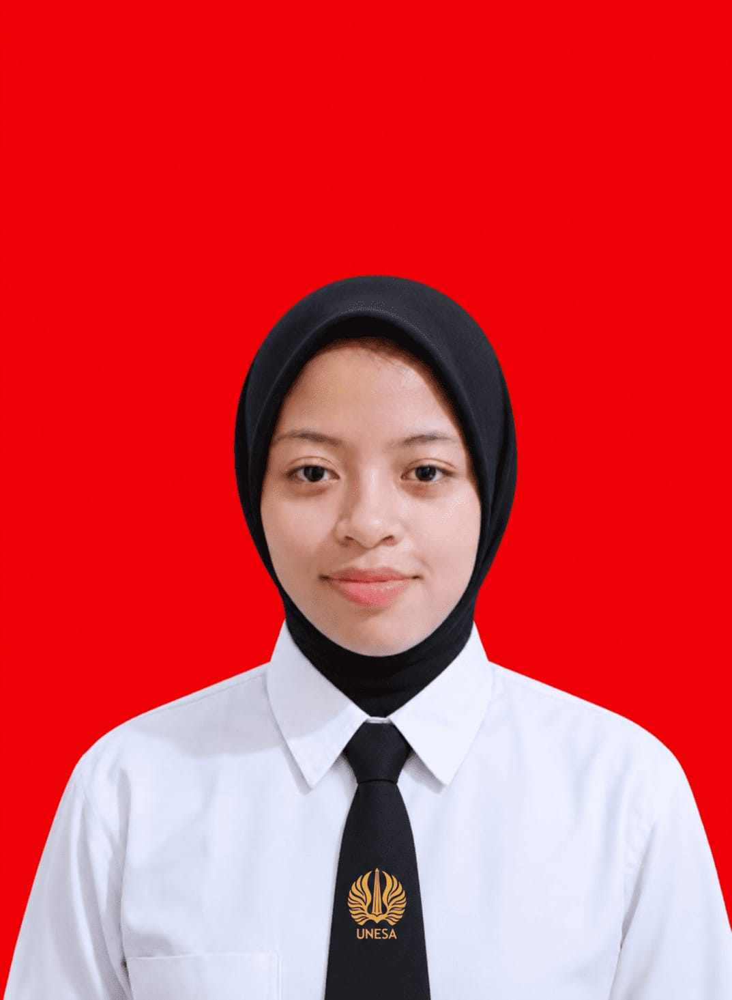

Gita Ramadhani Yusrin
Mahasiswa Teknik Informatika yang belajar menulis kode setelah terbiasa menulis sastra.

About Me
- Nama
- Gita Ramadhani Yusrin
- NIM
- 26051204036
- Prodi
- S1 Teknik Informatika
- Pendidikan
- Universitas Negeri Surabaya (2026 - sekarang)
- Sebelumnya
- MAN 2 Blitar
- Aktivitas
- Mahasiswa aktif, mendalami dasar pemrograman, struktur data, dan pemanfaatan AI untuk belajar.
Halo! Saya mahasiswa baru Teknik Informatika yang senang memecahkan masalah lewat kode dan teknologi. Saya tertarik pada pemrograman, pengembangan web, dan penerapan AI untuk membuat solusi digital yang bermanfaat.
Sejak SMA saya aktif di organisasi jurnalistik, bidang sastra. Latar belakang ini melatih saya menulis, menyampaikan ide, dan bekerja sama dalam tim.
What I Can Do
Skill
Tools
Achievement
-
Siswa Tersertifikasi Gemini (Universitas)
Google for Education
Menunjukkan pengetahuan, keterampilan, dan kompetensi dasar untuk menggunakan AI Google di lingkungan pendidikan. Berlaku 30/09/2026 sampai 30/09/2029.
Lihat sertifikat (PDF) -
Mahasiswa Baru Teknik Informatika
Universitas Negeri Surabaya
Diterima dan terdaftar sebagai mahasiswa S1 Teknik Informatika melalui seleksi masuk universitas.
-
Anggota Jurnalistik, Bidang Sastra
Jurnalistik MAN 2 Blitar
Aktif di divisi sastra organisasi jurnalistik sekolah: menulis dan berkarya sastra, yang melatih kemampuan menulis, komunikasi, dan kerja tim.
Dokumentasi belum tersedia.
Curriculum Vitae
Ringkasan pendidikan, pengalaman, dan sertifikasi saya. Versi lengkap bisa dibuka atau diunduh dalam bentuk PDF.
Pendidikan
Universitas Negeri Surabaya, S1 Teknik Informatika (2026 - sekarang)
MAN 2 Blitar
Pengalaman Organisasi
Anggota Jurnalistik, Bidang Sastra, MAN 2 Blitar (2024 - 2025)
Sertifikasi
Siswa Tersertifikasi Gemini (Universitas), Google for Education, berlaku sampai 30/09/2029
Keterampilan
Dasar pemrograman (C++), problem solving, algoritma dasar, prompt AI, penulisan kreatif, kerja sama tim, komunikasi
Tools
Visual Studio Code, Git dan GitHub, ChatGPT, Claude, Google Gemini
Mari berkenalan
Saya selalu terbuka untuk berdiskusi, berkolaborasi dalam proyek pemrograman, atau sekadar berbagi ilmu seputar dunia Informatika. Jangan ragu menghubungi saya lewat kontak di samping.